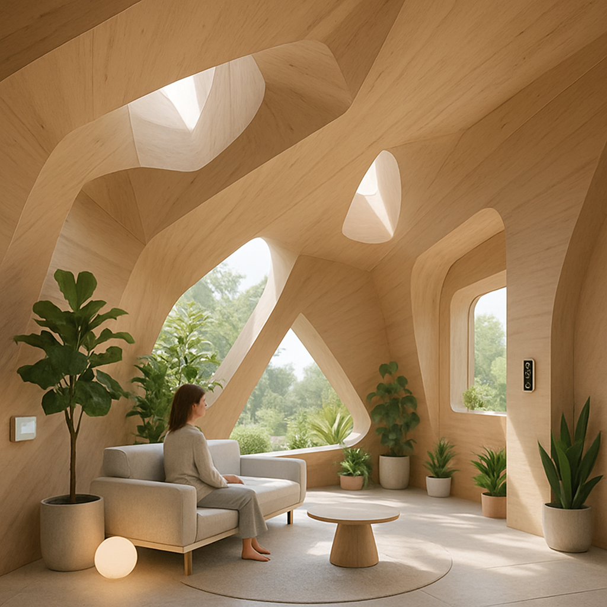

How It Works
Lumo is a two-part system: a wearable sensing layer and a spatial response layer. The wearable stays quiet. The space does the “speaking,” using atmosphere.
The steps
Sense
The wearable reads simple signals like breathing pace or stillness. No screen. No score.
Interpret (Pattern)
AThe system looks for a general direction (e.g., tension → softening, fatigue → slowing). It avoids labeling emotions too specifically.
Respond (Atmosphere)
A gentle reflection prompt. No scores, no judgment.
Reflect (Choice)
The room shifts in micro-ways: shadows soften, airflow becomes gentler, sound texture changes slightly, surfaces feel warmer/cooler.
solo
friends

future
Interaction type: carousel buttons move the step cards left/right.